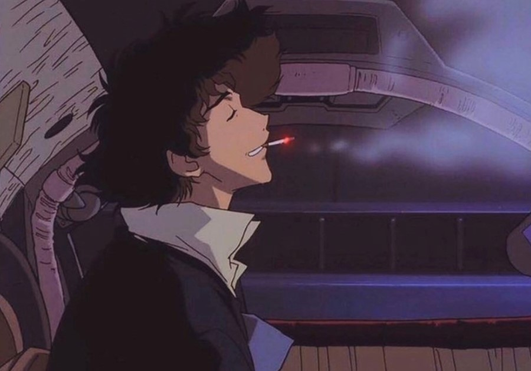

COWBOY BEBOP
No ano de 2071, a humanidade se espalhou pelo sistema solar, colonizando planetas e luas após a destruição da Terra. Com o aumento da criminalidade, os caçadores de recompensas – conhecidos como cowboys espaciais – se tornaram a principal força contra o crime.
Entre eles está Spike Spiegel, um ex-mafioso com um passado misterioso, e Jet Black, um ex-policial amargurado. Juntos, eles percorrem o espaço a bordo da nave Bebop, caçando criminosos para sobreviver. No caminho, eles acabam se unindo à enigmática e endividada Faye Valentine, ao excêntrico hacker Ed e ao cachorro superinteligente Ein.
Enquanto enfrentam caçadas perigosas e aventuras cheias de ação, os membros da Bebop são constantemente assombrados por seus passados, especialmente Spike, que precisa encarar um antigo amor perdido e um rival mortal.
Com uma mistura única de ficção científica, western, noir e uma trilha sonora de jazz inesquecível, Cowboy Bebop é um anime icônico que explora temas de solidão, destino e redenção em um universo tão belo quanto cruel.
Personagens:
trilha sonora
Uma das marcas registradas do anime é sua trilha sonora, composta por Yoko Kanno e sua banda The Seatbelts. O uso de jazz, blues, rock e até músicas clássicas deu à série uma identidade única. A música de abertura, Tank!, se tornou uma das mais icônicas da história dos animes.